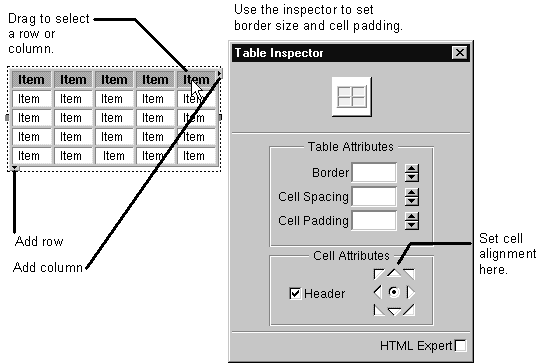

Table of Contents
Table of Contents
 Previous Section
Previous Section
Creating Tables
Create a table just like you would any other type of static HTML element: Place the cursor where the table should appear, and drag the table from the Static Elements palette. (See "Using the Static Elements Palette".)

- To edit the table, click inside the table. You will see resize borders and arrows pointing down and to the right.
- To resize the table, drag a resize border. You can drag a column edge to resize one column.
- Add columns by dragging the right arrow.
- Add rows by dragging the down arrow.
- To select a row or column in the table, drag the mouse across it.
- To delete a row or column, select it and press the Delete key.
- To merge cells, select the cells and choose Format->Table->Merge Cells.
- Set the HTML attributes for a table (for example the size of its border, cell padding, and alignment) in the inspector window.
- To add another HTML element inside of a cell, make sure you have the text inside the cell selected rather than the cell itself, then drag the element from the palette.
- You can also add an element outside of a table cell (for example, you can add a WORepetition around a table row) by selecting the row and dragging the element onto it.
Tip: To set bindings for an element that surrounds a table row, use the inspector interface. Click inside the row, then select the element from the icon path in the inspector. See "Selecting Elements" and "Binding Elements Using the Inspector" for more information.
Table of Contents
 Next Section
Next Section